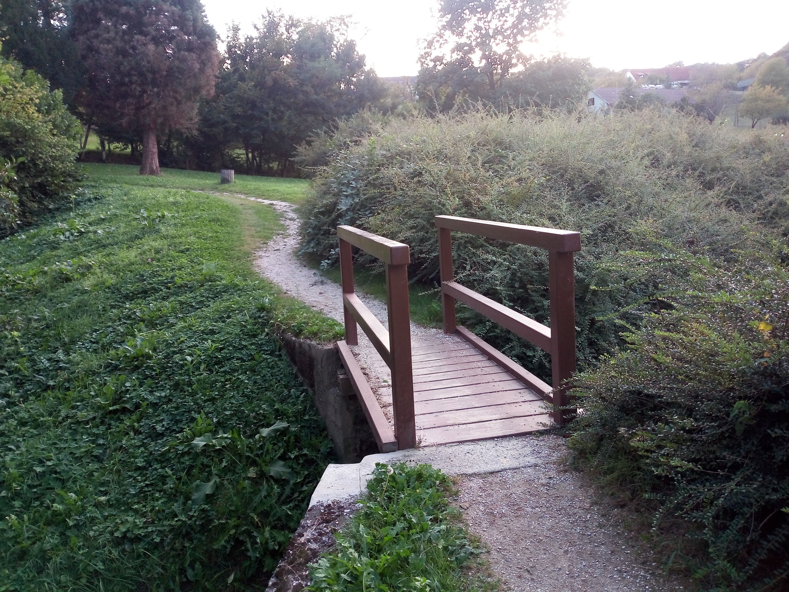

National Park, Maribor
Slovenia · Maribor
The natural landscapes around Maribor offer a refreshing escape from the city and a chance to enjoy Slovenia's beautiful green surroundings. Forested areas, peaceful paths and scenic views create a wonderful setting for spending time outdoors and appreciating the region's natural character. The changing scenery and quiet atmosphere make this area especially appealing to visitors looking to experience the natural side of the region. It offers a pleasant contrast to Maribor's historic streets and lively urban centre. During my visit, I enjoyed exploring the natural scenery and capturing some of its peaceful atmosphere through my photographs. These images preserve my personal memories of this part of Slovenia and its beautiful outdoor surroundings.
My Photo Gallery
Explore my personal travel photos from the natural surroundings of Maribor.
View All Photos ↗